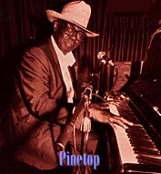

Премия W.C.Handy 1997 года
(18-я ежегодная премия, 1 мая 1997.)
Десять
картинок с церемонии вручения W.C.Handy’97.
- лауреаты
- номинанты-претенденты
Blues Entertainer of the Year
- Luther
Allison

- Charles Brown
- R.L. Burnside
- B.B. King
- Taj Mahal
- CoCo Montoya
- Bobby Rush
Blues Band of the Year
- Luther
Allison & the James Solberg Band
- B.B. King Orchestra
- Magic Slim & the Teardrops
- Rod Piazza & the Mighty Flyers
- Ronnie Earl & the Broadcasters
- Roomful of Blues
Contemporary Blues-Male Artist of the Year
Contemporary Blues-Female Artist of the Year
- Debbie Davies
- Marcia Ball
- Etta James
- Koko Taylor
- Toni Lynn Washington
Soul/Blues-Male Artist of the Year
- Bobby Bland
- Johnny Adams
- Solomon Burke
- Mighty Sam McClain
- Little Milton
Soul/Blues-Female Artist of the Year
- Irma Thomas
- Denise LaSalle
- Ann Peebles
- Francine Reed
- Lavelle White
Traditional Blues-Male Artist of the Year
- James Cotton

- R.L. Burnside
- David "Honeyboy" Edwards
- Frank Frost & Sam Carr
- Alvin Youngblood Hart
Traditional Blues-Female Artist of the Year
- Rory Block
- Bonnie Lee
- Annie Raines
- Saffire, the Uppity Blues Women
- Katie Webster
Acoustic Blues-Artist of the Year
- Keb 'Mo
- John Hammond
- Corey Harris
- Alvin Youngblood Hart
- Paul Rishell & Annie Raines
Best New Blues Artist
Blues Instrumentalist-Guitar
- Ronnie
Earl
- Luther Allison
- Anson Funderburgh
- Matt Guitar Murphy
- Joe Louis Walker
Blues Instrumentalist-Harmonica
- William Clarke

- James Cotton
- Charlie Musselwhite
- Rod Piazza
- Kim Wilson
Blues Instrumentalist-Keyboards
- Pinetop
Perkins

- Marcia Ball
- Charles Brown
- Floyd Dixon
- Miss Honey Alexander Piazza
Blues Instrumentalist-Bass
- Willie Kent
- Sister Sarah Brown
- Aron Burton
- Johnny B. Gayden
- Bob Stroger
Blues Instrumentalist-Drums
- Willie "Big Eyes" Smith
- Ray "Killer" Allison
- Sam Carr
- Sam Lay
- George Raines
Blues Instrumentalist-Other
- Clarence
"Gatemouth" Brown - Violin
- C. J. Chenier - Accordian
- Porky Cohen - Trombone
- Kaz Kazanof - Saxophone
- Sonny Rhodes - Lapsteel Guitar
- Roomful of Blues - Horn Section
Contemporary Blues Album of the Year
- William Clarke - The Hard Way

- Luther Allison - Where Have You Been/Live in Montreux
- Long John Hunter - Border Town Legends
- Son Seals - Live: Spontaneous Combustion
Soul/Blues Album of the Year
- W.C. Clark - Texas Soul
- Johnny Adams - One Foot in the Blues
- Tutu Jones - Blues Texas Soul
- Mighty Sam McClain - Sledgehammer Soul & Downhome Blues
- Johnny Taylor - Good Love
Traditional Blues Album of the Year
- Junior Wells - Come on in this House
- James Cotton - Deep in the Blues
- Alvin Youngblood Hart - Big Mama's Door
- John Primer - The Real Deal
- Paul Rishell & Annie Raines - I Want You To Know
Comeback Blues Album of the Year
- Floyd Dixon - Wake Up and Live
- Little Sammy Davis - I Ain't Lyin'
- Johnny Jenkins - Blessed Blues
- Paul Oscher - Knockin' on the Devil's Door
- Brewer Phillips - Homebrew
Acoustic Blues Album of the Year
- James Cotton - Deep in the Blues
- Cephas & Wiggins - Cool Down
- Harmonica Fats & Bernie Pearl - Blow, Fat Daddy, Blow
- Alvin Youngblood Hart - Big Mama's Door
- Paul Rishell & Annie Raines - Want You To Know
Reissue Blues Album of the Year
- Freddie King - Live at the Electric Ballroom, 1974

- Bobby Bland - That Did it! The Duke Recordings Vol. 3
- Slim Harpo - The Scratch
- Mississippis John Hurt - Avalon Blues, The Complete 1928 OKeh Recordings
- B.B. King - How Blue Can You Get, Classic Blues Performances 1964-1994
Blues Song of the Year: Song Title - Composer (Artist-Album-Title)
- "Fishing Blues" - William Clarke - (William Clarke -
The Hard Way)
- "Been There Done That - Marvin & Donna Taylor (Francine Reed - Can't Make it on
My Own)
- "One Foot in the Blues" - Dan Penn, Jonnie Barnett & Carson Whitsett
(Johnny Adams - One Foot in the Blues)
- "One Monkey Don't Stop No Show" - Bobby Rush (Bobby Rush - One Monkey Don't
Stop No Show)
- "We Got to Stop This Killin'" - Big Jack Johnson (Big Jack Johnson - We Got to
Stop This Killin')